One hex, a whole ramp.
A ramp turns one colour into five stops. Its shadows shift toward cool blue-violet and its lights toward warm yellow, so this stone is shaded from a single hex.
palette study
ramp pebble #ff6a5a 5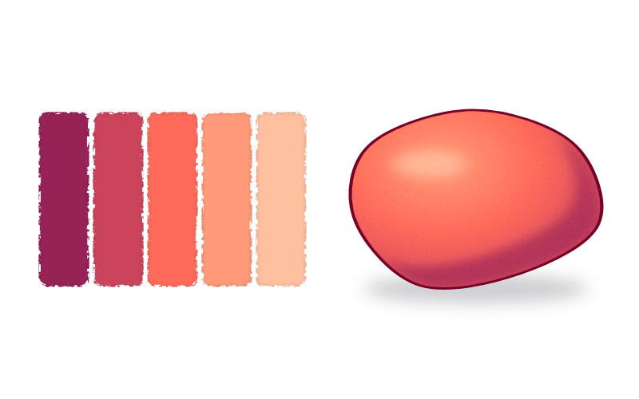
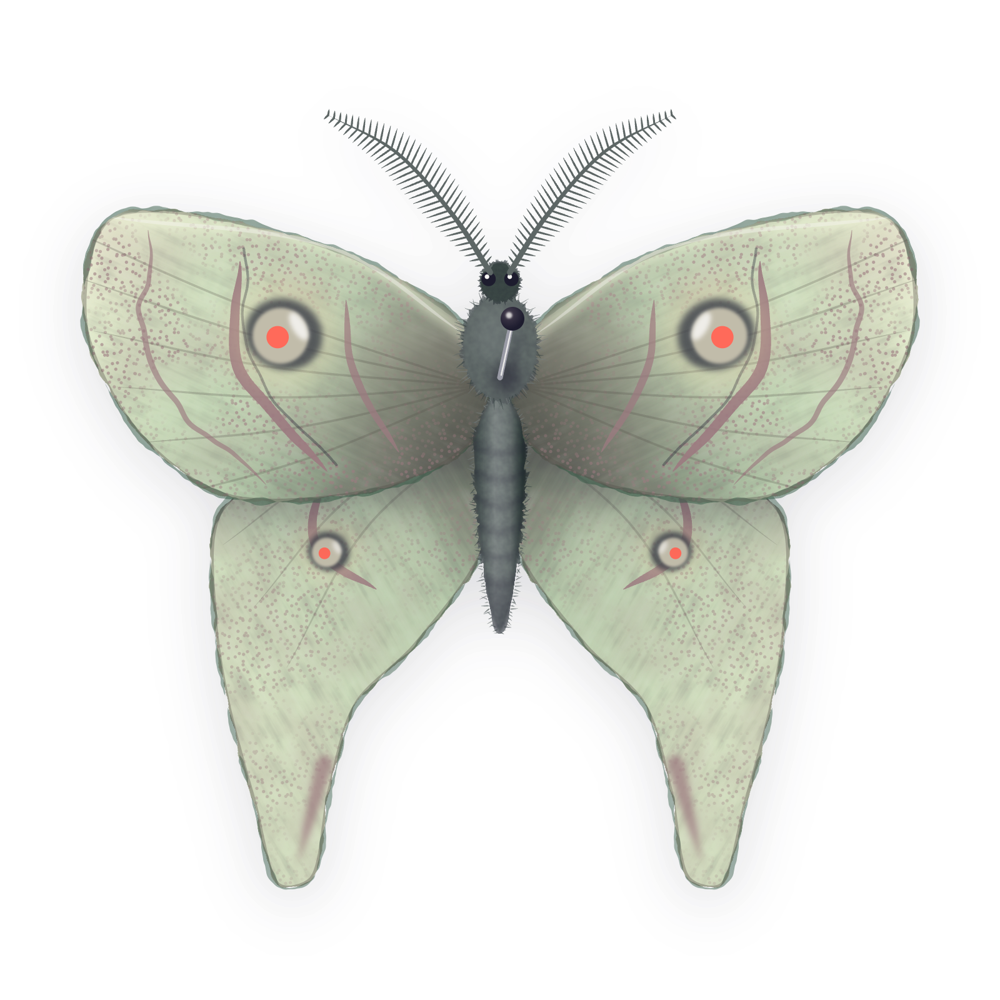
# The hero: one luna specimen, large, pinned through the thorax.
@target specimen/luna_tailed.png 1600x1600
use moth { moth }
moth wing:luna shape:broad tails:on eyes:on pattern:2 at:800,722 scale:5.2 name:hero
layer pin
curve 810,612 830,540 stroke:fade(p.ink .3),12 blur:7 name:pin_shadow
circle 26 at:810,604 fill:fade(p.ink .4) blur:9 name:pin_contact
curve 800,604 818,520 stroke:p.steel,9 taper:0,.15 name:shaft
curve 802,600 819,522 stroke:fade(p.paper .85),2.4 taper:0,.15 name:shaft_lit
circle 19 at:820,510 fill:radial(shade(p.ink 2) p.ink at:.35,.3 r:24) name:pin_head
circle 5.5 at:-5.5,-5.5 fill:fade(p.paper .8) blur:1.5A small language for procedural art. One text file builds painted PNG, SVG and GIF.
artscript check --json
artscript buildYour model writes it, checks it and fixes it.
Install the CLIEvery specimen here is the same component, lib/moth.art, given a palette row, a pattern seed and a wing shape. A new species is one line.
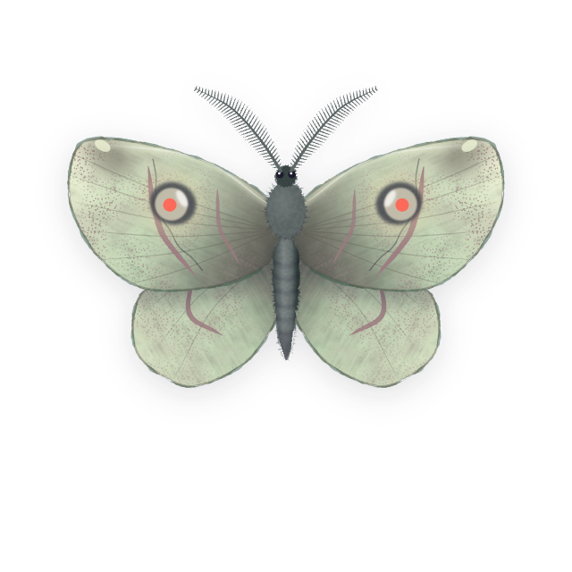
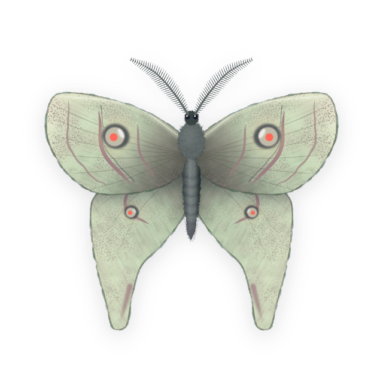
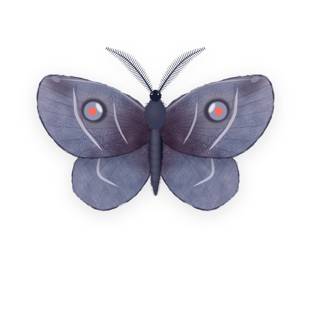
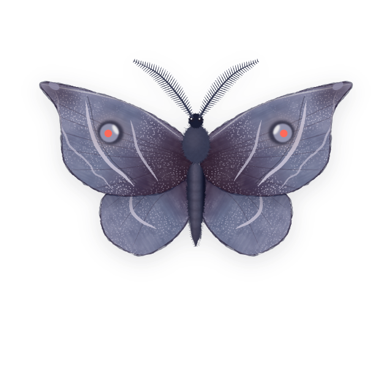
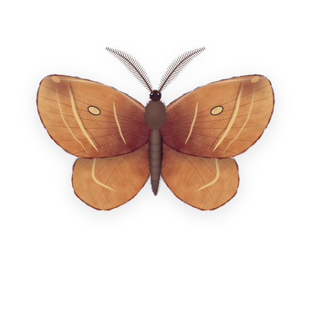
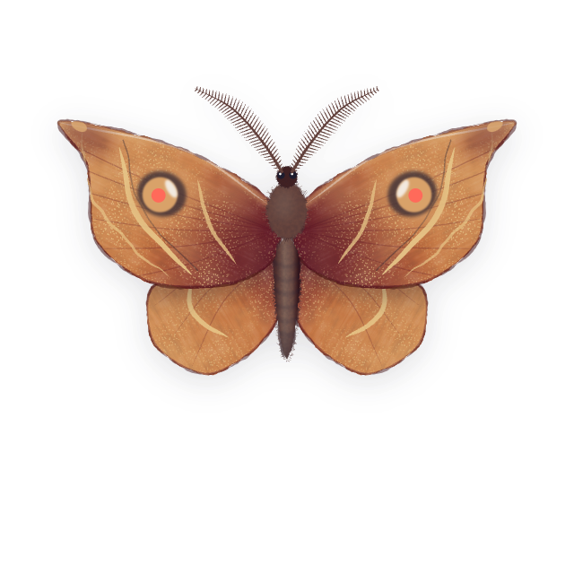
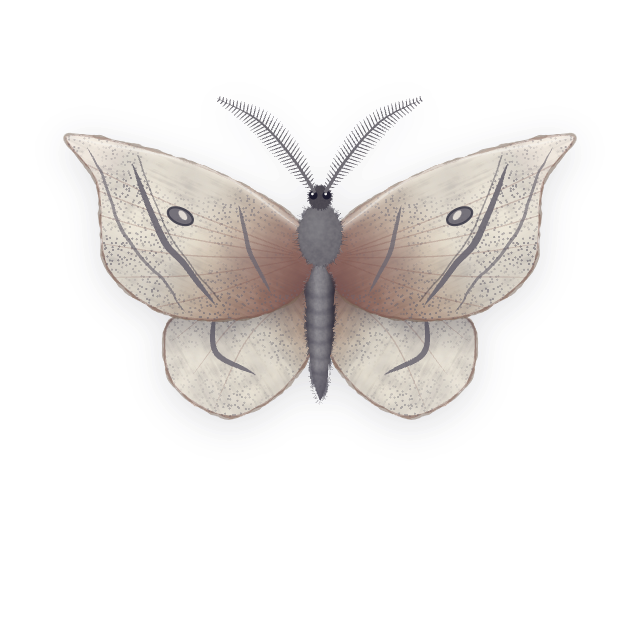
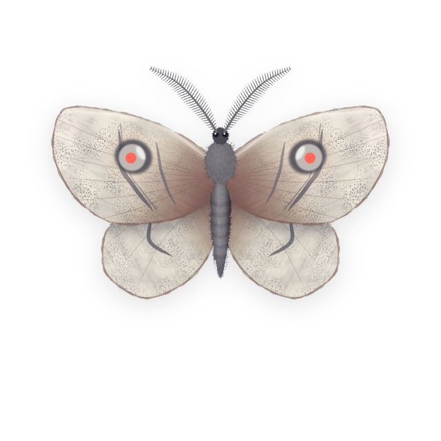
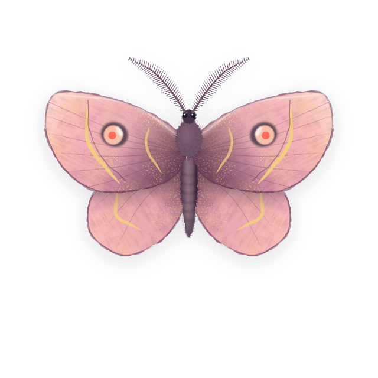
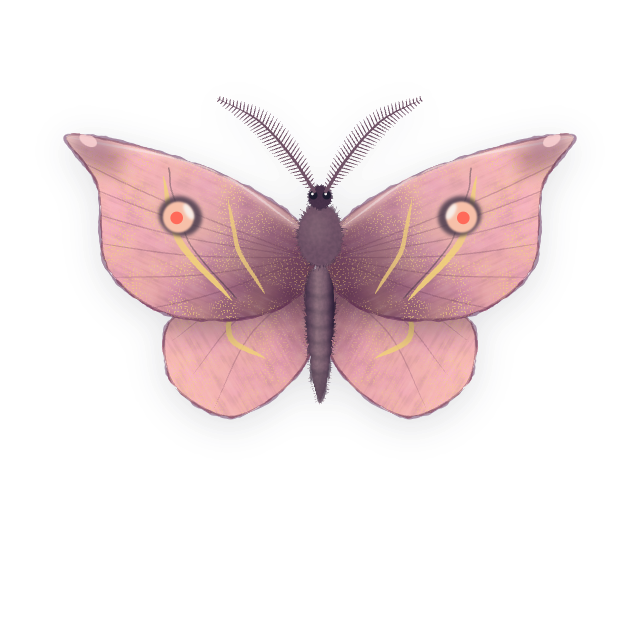
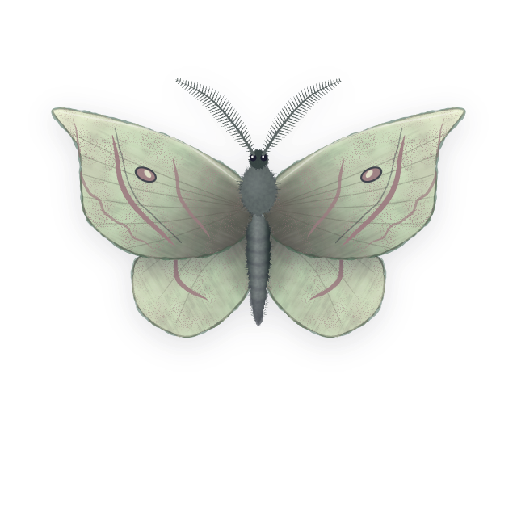
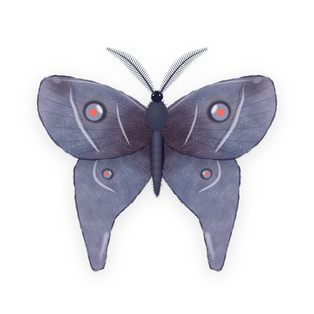
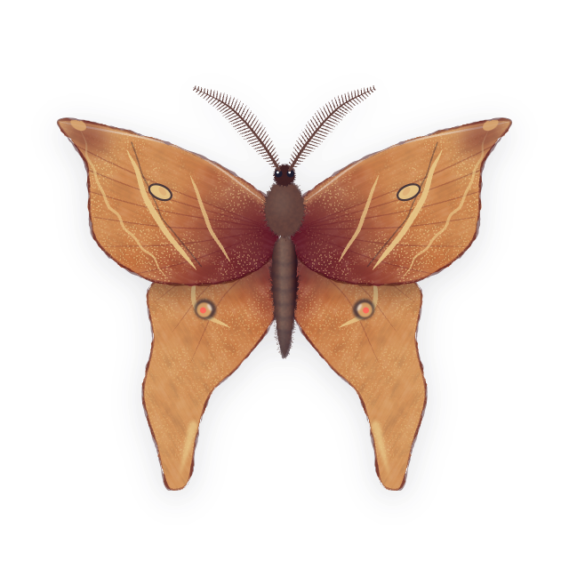
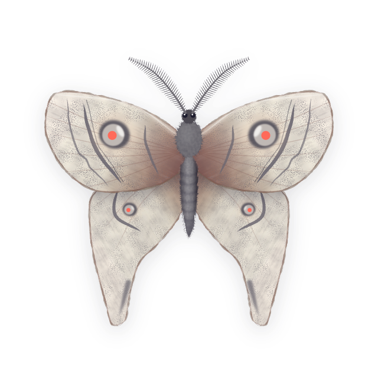
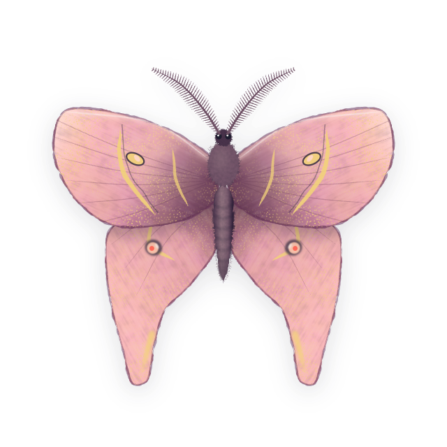
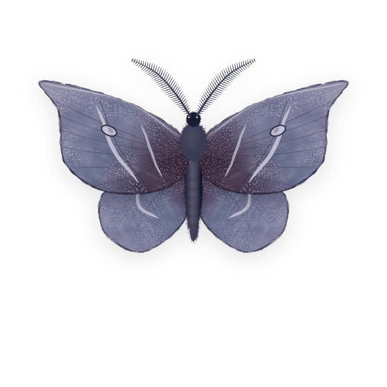
@target plate/{name}.png 640x640 each name:[luna_veil luna_tailed dusk_ember dusk_lantern ember_brindle ember_falcate bone_scribe bone_pale rosy_sash rosy_lanternfly luna_sickle dusk_tailed ember_tailed bone_tailed rosy_tailed dusk_plain]
use moth { moth }
each s in specs
if s.0 == name
moth wing:s.1 shape:s.2 tails:s.3 eyes:s.4 pattern:s.5 at:320,296 scale:1.9 name:specimenEach control edits one line of demo.art. The picture is that file’s real build.
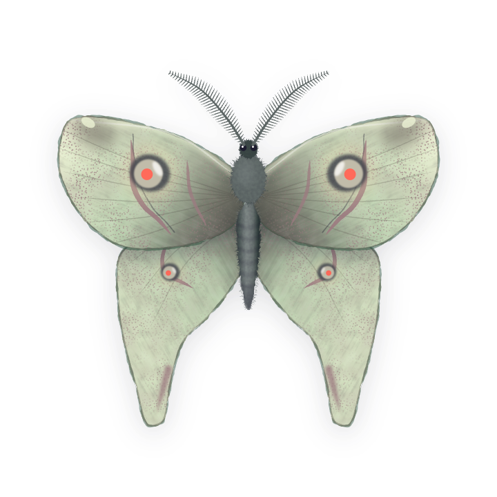
Read demo.art# One moth, fanned out. The target matrix renders every combination of a wing palette,
# a pattern seed, and tails on or off: 5 x 4 x 2 = 40 images from one line of drawing.
@target demo/moth_{wing}_{pattern}_{tails}.png 720x720 each wing:[luna dusk ember bone rosy] pattern:[1 2 3 4] tails:[on off]
use moth { moth }
moth wing:wing pattern:pattern tails:tails at:360,328 scale:2.15 name:specimenForty images from a seven-line file that calls one component. Built by artscript build. None was retouched.
art/sprout_broken.art
each k in [-1 1]
ellipse 22,8 at:k*72,48 fill:p.coral.3 a:.45 blur:6 name:cheek
circle 15 at:k*50,22+k*9 fill:sprout.ink name:eye
circle 5 at:-5,-6 fill:sprout.seed.4
curve -14,52 0,60 14,52 stroke:sprout.ink,4 name:mouth
fx outline 5
assert level(@eye.0 @eye.1) tol:.5
assert inside(@body canvas margin:24)First the model writes it.
2C0101assert level(@eye.0 @eye.1) tol:.5eye.cy = 329 eye.cy = 347 difference 18 > tol 0.5set .eye.1 at:50,13Then check finds the eyes.
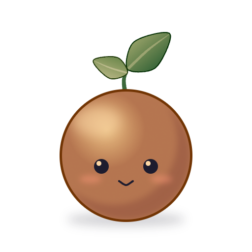
sprout.png8daee09c806aa725passThen build paints it.
--- a/art/sprout.art
+++ b/art/sprout.art
@@ -7 +7 @@
- ramp leaf #6f8a4f 5
+ ramp leaf #d9773a 5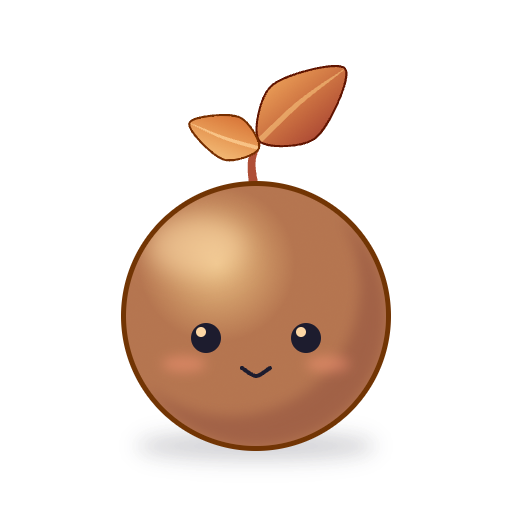
8daee09c806aa725 → fdd045a16fb5e59cThen the diff shows one change.
A ramp turns one colour into five stops. Its shadows shift toward cool blue-violet and its lights toward warm yellow, so this stone is shaded from a single hex.
palette study
ramp pebble #ff6a5a 5
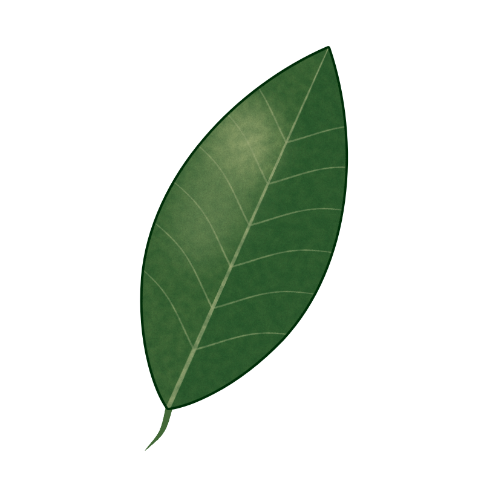
Children clip to their parent. The texture on this leaf is an 800 by 800 rectangle, but it is the leaf’s child, so it paints only inside the leaf.
rect 800x800 fill:fbm(simplex(26)) -> [fade(p.leaf.0 0) fade(p.leaf.0 .45)] name:textureA brush is a small SkSL program that shades each pixel of a fill or a stroke. This swash stacks two brushes from std/brushes over one curve, with a width and a pressure at each point.
brush:[bristle(strength:.85 gaps:.9) dry(strength:.25)] pressure:[.7 1 1 .85 .55 .3 .1]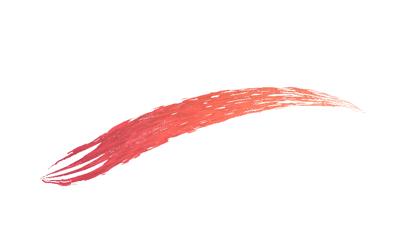
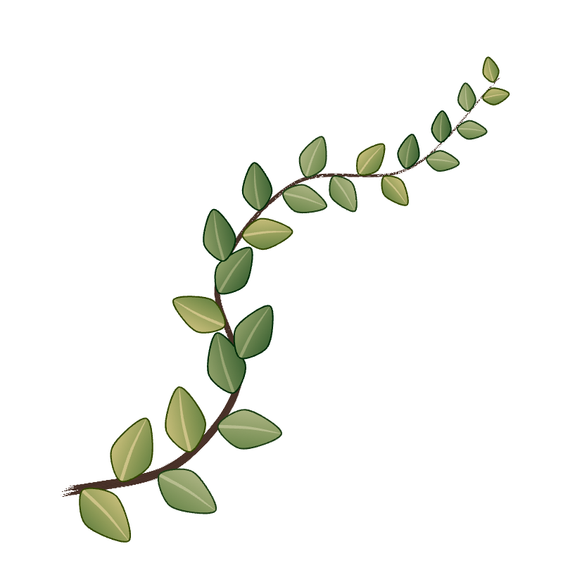
A stamp is a block of drawing laid along a stroke. Each leaf here reads the stroke’s pressure, so the sprigs grow larger and further apart toward the root.
stamp sprigs spacing:22+34*pressure
let side = if mod(i 2) == 0 then 1 else -1Simplex, perlin, worley and fbm fields fill a shape through a ramp or a list of colours. The stone is fbm noise. The lichen is worley noise mapped through three greens.
fill:fbm(simplex(90)) -> [p.stone.1 p.stone.3]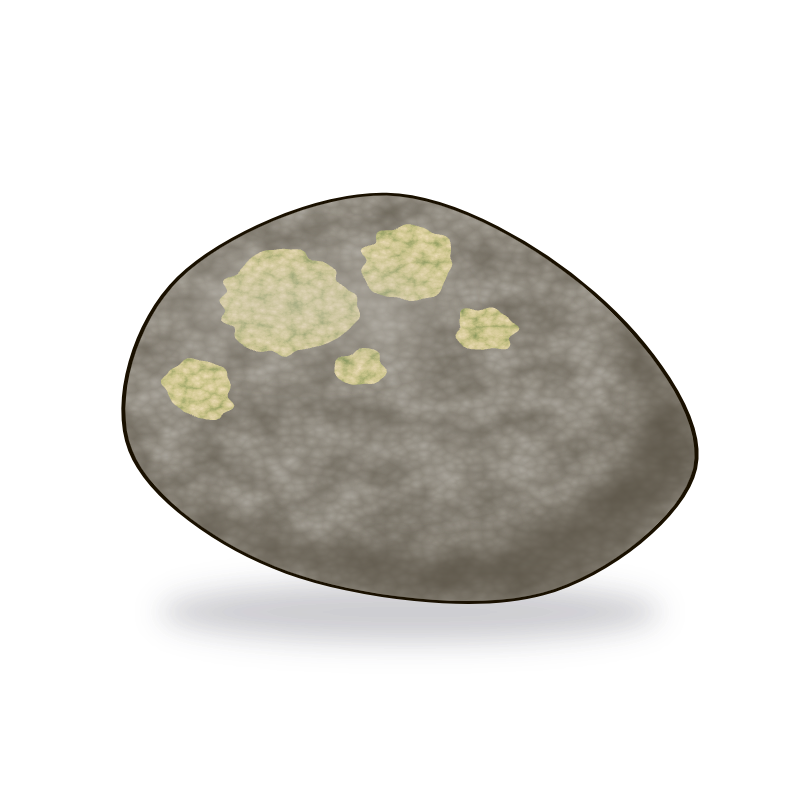
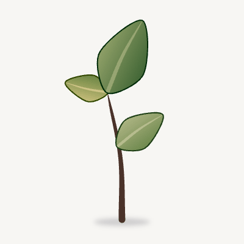
An anim keys the rotation of three named parts over 1.5 seconds. The GIF target plays the loop. A PNG target of the same file draws the frame at 375 ms.
anim sway dur:1.5s loop
.sprig rot:key(-6 6 -6)
.crown rot:key(4 -8 4)
.low rot:key(-5 7 -5)644
tokens: the core language card a model reads first.
435
tokens: slime.art, which builds three PNGs and three GIFs.
4,135
tokens: the average piece in the chibi example.
43×
larger: the built SVG against its .art source.
624,507
SVG tokens built from momo_peach.art, which is 3,540.
1 s
about, to check the whole chibi project without rendering.
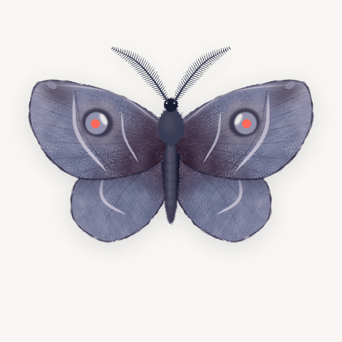
artscript builds with stable Rust. Install the CLI, run init, then build.
git clone https://github.com/tvanhens/artscript
cd artscript
cargo install --path crates/cli